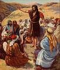

태초에 말씀이 계셨다

화려한 등장이었을까?
매년 12월이 되면, 우리는 한 해의 가장 큰 축제인 크리스마스를 기다립니다! 가게들은 반짝이는 불빛과 장식으로 가득합니다. (해마다 준비가 점점 더 빨라지는 것 같죠?) 집마다 전구를 걸고 나무를 장식하며, 도시와 마을의 거리는 여러 건물 주위에서 반짝이는 조명으로 밝혀집니다. 그리고 그 가운데 가장 큰 기대는 무엇일까요? 바로 선물들입니다! 올해는 어떤 선물이 있을까? 우리가 바라던 그 선물인가?. 12월 25일이 빨리 오기를 손꼽아 기다리고 있습니다!

아주 조용한 등장
그렇다면 2000년 전에도 그랬을까요? 사람들이 예수님의 탄생을 기대하며 기다렸을까요? 예수님의 탄생을 기념하기 위해 집을 장식했을까요? 서로에게 선물을 준비하며 이 오랜 기다림의 순간을 축하했을까요? 예수님이 태어났을 때, 세상 곳곳에 예수님이 드디어 오셨다는 소식이 퍼졌을까요?
그렇지는 않았습니다.

예수님께서 베들레헴, 즉 다윗의 성에서 태어나셨을 때, 이를 알고 있었던 사람은 극히 일부에 불과했습니다. 마리아, 예수님의 어머니와 그녀의 약혼자 요셉, 그리고 그들이 머물던 여관의 마구간 주인만이 아기가 태어났다는 사실을 알고 있었을 것입니다. 하지만 그들에게는 특별한 사건으로 느껴지지 않았습니다.
하지만 하늘에서는 큰 기쁨이 있었습니다. 누가복음 2장 8절에서 14절에 따르면, 예수님이 태어난 그날 밤, 많은 천사들이 목자들에게 나타났습니다. 천사들은 예수라는 아기가 태어났음을 알릴 뿐만 아니라, 그분이 유대인들이 오랫동안 기다려온 메시아라는 사실을 선포했습니다!
하지만 다른 사람들이 그 사실을 알기까지는 30년이 더 걸렸습니다.
네 명의 인물, 네 가지 이야기

예수님의 죽음, 부활, 그리고 하늘로의 승천 이후 몇 년 동안, 네 명의 사람이 예수님의 삶에 대해 글을 쓰도록 영감을 받았습니다. 신약 성경의 첫 네 권은 이들의 생애를 기록한 사람들의 이름을 따서 지어졌으며, 일반적으로 복음서라고 불립니다: 마태, 마가, 누가, 요한입니다.
이들은 서로 이야기를 나누지 않았고, 다른 누군가가 예수님의 이야기를 쓰고 있다는 사실조차 알지 못했을지도 모릅니다. 마태, 누가, 요한은 모두 마가복음을 읽었을 가능성이 높습니다. 학자들은 마가복음이 예수에 대한 최초의 기록이었을 것이라고 믿고 있습니다. 하지만 이 네 복음서는 각각 독립적으로 작성되었습니다.
원래 사람이 어떤 사건에 대해 이야기할 때는 보통 그 사건에서 가장 중요한 부분이라고 생각하는 내용을 포함하려고 합니다. 마태, 마가, 누가, 요한도 마찬가지였습니다. 이들 중 일부는 다른 사람들이 포함하지 않은 사건을 다루기도 했고, 어떤 이들은 사건의 순서를 다르게 이야기하기도 했습니다.
예를 들어, 오직 마태복음과 누가복음만이 예수님의 탄생 이야기를 전합니다. 누가는 예수님이 처녀에게서 태어났다는 점이 사람들에게 중요하다고 생각했을 것입니다. 마리아의 약혼자 요셉은 예수님의 아버지가 아니며, 예수님은 하나님의 아들이십니다. (누가복음 1:26-38)
마태복음은 예수님의 족보로 시작합니다. 오래 전 하나님께서 아브라함에게 그의 자손 중에서 올 왕을 통해 세상이 복을 받을 것이라고 약속하신 것 기억하시나요? (창세기 12:3) 마태는 예수님이 아브라함의 직계 자손이자 다윗의 자손임을 강조하며, 예수님이 그 고대 예언의 성취임을 보여줍니다.
마가복음과 요한복음에서는 예수님에 대해 쓸 때 독자들이 예수님이 누구인지 잘 알고 있다고 생각했습니다. 예수님이 이 땅에 계셨을 때, 그는 매우 유명했습니다. 그래서 마가와 요한은 예수님이 약 서른 살이 되었을 때부터 그의 지상 사역을 시작하는 이야기를 전합니다.
예상 밖의 메시아

이스라엘이 아시리아와 바빌론에 의해 멸망할 것이라고 예언한 선지자들에 대해 배울 때, 우리는 그들이 다윗 왕의 후손에서 한 왕, 즉 메시아이자 구원자가 오실 것이라고도 예언했음을 배웠습니다. 이러한 예언들은 이스라엘 백성에게 나라가 다시 위대한 강국이 될 것이라는 희망을 주었고, 한 왕이 오셔서 이스라엘의 모든 적들을 물리치고 세상을 다스리는 초강대국으로 만들 것이라는 믿음을 심어주었습니다.
그러나 유대인들은 모든 예언을 제대로 이해하지 못했거나, 읽었다 하더라도 그 의미를 크게 오해하고 있었습니다. 선지자들은 하나님께서 보내실 메시아에 대해 두 가지 모습을 예언했습니다. 하나는 강력한 통치자로서의 메시아였습니다. 하지만 유대인들이 놓친 것은, 이 왕이 매우 겸손한 환경에서 오실 것이며, 그분의 오심이 요란한 방식이 아닐 것이라는 사실이었습니다. (작고 고요한 베들레헴에서의 밤을 기억하시나요?) 이 새로운 왕은 세상의 통치자처럼 영광과 권세를 가진 분이 아니라, 슬픔과 고통을 아시고 이 땅에서 고난을 겪으실 분이었습니다.
패배와 낙심 속에 있던 유대인들은 예수님처럼 겸손한 메시아를 기대하지 않았습니다. 그들은 훨씬 더 강력한 인물을 원하고 있었습니다.
그래서 예수님께서 그들 가운데 오셔서 함께 생활하셨을 때, 그들은 그분이 메시아임을 알아보지 못했습니다.

예수님의 가르침
예수님께서 자라나신 곳은 다른 나라의 통치 아래 있었습니다. 이 시기에는 강력한 로마 제국이 그 지역을 지배하고 있었습니다. 예수님은 매우 단순한 사회에서 자라셨습니다. 유대인들은 신앙심이 깊었고, 그분의 이웃들은 주로 농부, 어부, 또는 장인이었습니다 (예수님의 어머니 마리아의 남편 요셉은 목수였습니다).
이러한 배경 속에서 예수님은 사람들이 쉽게 이해할 수 있도록 비유를 통해 영적인 진리를 가르치셨습니다. 비유는 당시 사람들이 잘 알고 있던 일상적인 상황을 바탕으로 한 비유들이었습니다:

- 밭에 씨를 뿌리는 농부의 비유 (마태복음 13:2-23)
- 돌아온 탕자의 비유 (누가복음 15:11-32)
- 잃은 양의 비유 (마태복음 18:10-14)

바리새인들
예수님 당시 제사장들(성경에서 바리새인이라고도 불리며, "구별된 자들"이라는 뜻입니다)은 유대인들의 일상생활을 지배하고 있었습니다. 제사장들은 하나님께서 특별히 선택한 이스라엘의 열두 지파 중 하나인 레위 지파 출신이었습니다. 그들은 유대인들이 과거에 탈선하지 않도록 지키는 것이 자신의 임무라고 생각했습니다. 또, 성경을 읽고 해석하여 백성들에게 전달하는 것이 자신의 역할이라고 여겼습니다. (앞서 하나님이 성경을 모든 사람을 위해 의도하셨다고 말씀드린 것 기억하시나요?)
하지만 예수님은 레위 지파 출신이 아니었으므로 제사장이 아니었습니다.

랍비(성경의 진리와 지식을 가르치는 선생)가 되기 위해서는 특별한 랍비 학교에서 오랜 훈련을 받아야 했습니다.
예수님은 랍비 학교에 다니지 않으셨기 때문에 바리새인들은 그분을 "가르칠 자격이 없다"고 생각했습니다.
이로 인해 예수님의 사역이 시작된 초기부터 예수님은 종교 지도자들과 충돌하게 되었습니다. 그럼에도 불구하고 많은 사람들이 예수님의 가르침을 듣기 위해 모였습니다. 예수님이 하신 가장 유명한 가르침 중 하나인 산상수훈(마태복음 5장-누가복음 6장)에서는 거의 모든 주제가 바리새인들이 사람들에게 믿게 하려 했던 내용과 반대되는 내용이었습니다.
예수님이 추종자들에게 가르치고 싶어 하셨던 주요 내용은 다음과 같습니다:
- 하나님은 사람들을 사랑하시며, 하나님은 우리 사랑의 대상이 되기를 원하십니다. 하나님을 사랑하는 한 가지 방법은 법의 글자뿐만 아니라 법의 정신도 지키는 것입니다. 그래서 예수님은 추종자들에게 정직할 뿐만 아니라 자비롭고 친절하며 정의롭게 행동하라고 말씀하셨습니다.
- 예수님은 추종자들이 사랑으로 알려지기를 원하셨습니다. 믿는 자들에 대한 사랑은 물론이고, 심지어 적에 대한 사랑까지 포함됩니다. 하나님은 믿는 자들의 죄를 용서하시겠다고 약속하셨으며, 우리도 서로 용서하기를 원하십니다.
예수님이 추종자들에게 가장 중요하게 알려주고 싶었던 것은 그분이 바로 예수님이라는 것이며, 죄로부터의 구원은 오직 그분을 통해서만 온다는 것입니다. 성경에서 가장 유명한 구절 중 하나인 요한복음 3장 16절은 하나님께서 인류와 맺으신 새 언약을 선언합니다:
하나님이 세상을 이처럼 사랑하사 독생자를 주셨으니, 이는 그를 믿는 자마다 멸망하지 않고 영생을 얻게 하려 하심이라
예수님의 이 선언은 두 가지 이유로 혁신적이었습니다. 첫째, 예수님이 하나님의 아들이라는 개념은 많은 유대인들에게 받아들여지기 어려운 것이었습니다. 어떻게 평범한 인간이 하나님이 될 수 있겠습니까? 둘째, 예수님 시대의 종교 지도자들이 받아들이기 힘들었던 또 다른 개념은 구원이 더 이상 유대인들에게만 국한되지 않는다는 점이었습니다. 예수님은 자신을 믿는 누구나 하나님의 나라에 속할 수 있다고 말씀하셨습니다 (요한복음 1:12).
사두개인들
사두개인들은 예수님 시대에 살았던 저명하고 종종 부유한 유대인 그룹으로, 로마와 정치적으로 관계를 맺어 일정한 권력을 누리고 있었습니다. 이들은 때때로 동족 유대인들로부터 로마 세금을 징수하는 일을 맡았고, 종종 부정직하게 행동하여 사람들이 실제로 내야 할 금액보다 더 많은 세금을 요구해 자신들의 이익을 챙기곤 했습니다. 이 때문에 그들은 미움을 받는 로마와의 밀접한 관계로 많은 유대인들로부터 배신자로 여겨졌습니다.
유대인들 사이에서는 종종 반란에 대한 이야기가 오갔고, 그들은 로마의 가혹한 통치 아래에서 고통을 느끼고 있었습니다. 사두개인들은 유대인들과 로마인들 간의 평화를 유지하는 것이 자신의 임무라고 생각했습니다. 유대인들이 로마에 덜 문제를 일으킨다면, 사두개인들은 모두에게 더 나은 상황이 될 것이라고 믿었습니다.

예수님과의 논쟁
앞서 언급한 것처럼, 예수님은 많은 사람들에게 가르치고 하나님과 그분의 사랑에 대한 기쁜 소식을 전파하셨습니다. 그러나 바리새인들은 이를 전혀 반기지 않았습니다. 그들은 유대인들 사이에서 유일한 종교적 권위를 주장하고 싶어 했습니다. 반면, 예수님은 사람들에게 영적인 문제에 대해 더 깊이 생각하도록 가르쳤고, 그 점에서 사람들은 큰 매력을 느꼈습니다.

사두개인들도 예수님이 끌어모은 대중을 싫어했습니다. 사람들이 모이면 쉽게 통제할 수 없기 때문입니다. 만약 예수님이 주변의 대중이 로마에 대해 반란을 일으키도록 이끈다면, 그들은 어쩔 수 없이 그 상황에 휘말릴 수밖에 없었습니다
사두개인들은 많은 유대인들이 로마 군대에 맞서 싸울 수 없다는 사실을 잘 알고 있었습니다. 만약 로마가 유대인의 반란을 진압하게 된다면, 그들은 무자비하게 진압할 것이 분명했습니다(실제로 예수님이 이 땅에 계신 지 약 35년 후에 그런 일이 발생했습니다). 그들의 정치적 권력은 로마에게 더 이상 아무 의미가 없어질 것이고, 사두개인들은 예수님 같은 소란스러운 인물 때문에 자신의 권력을 잃을 생각이 전혀 없었습니다!

그러나 예수님께서 하신 가장 심각한 일은 그가 실제로 하나님의 아들이라고 사람들에게 선포한 것이었습니다. 예수님은 그들이 오랫동안 기다려온 메시야라고 말씀하셨습니다. 바리새인들에게 이는 신성모독으로 간주되었으며(하나님에 대한 극도의 불경!), 유대 법에 따르면 이는 사형에 처해질 수 있는 범죄였습니다.
예수님은 자신의 메시야라는 주장을 뒷받침하기 위해 여러 차례 기적과 표적을 행하셨습니다. 병자를 치유하고, 맹인을 보게 하셨으며, 절뚝거리는 사람에게 다시 걷게 하셨습니다. 심지어 한 사람을 죽음에서 살리시기도 하셨습니다!
예수님은 바리새인들에게 그들의 권위를 의심하게 만드는 위협으로, 사두개인들에게는 그들의 권력에 대한 도전으로 인식되었습니다.
평소에는 서로 친밀하지 않던 바리새인들과 사두개인들은 이제 공통의 적인 예수님을 향해 뭉치게 되었습니다.
어느 날 밤, 예수님께서 기도하고 계실 때, 예수님의 가장 가까운 제자 중 한 명인 유다 이스가리옷이 (열두 제자 중 한 명) 바리새인들과 사두개인들을 이끌고 예수님이 자주 기도하시던 겟세마네 동산으로 찾아왔습니다. 예수님께서는 죄가 없으심을 알고 계셨지만, 체포에 저항하지 않으셨습니다.
예수님을 고발한 사람들은 그분을 성전의 대제사장 가야바에게 데려가 비밀 재판을 열었습니다. 그들은 예수님께서 자신을 메시아라고 하셨으니 신성 모독죄를 범했다고 가야바에게 말했습니다.

예수님께서 대제사장 앞에 서셨을 때, "내가 바로 그이요. 당신들은 인자가 전능하신 분의 오른쪽에 앉아 있는 것을 보게 될 것이오"라고 말씀하셨습니다. (마가복음 14:62)
거짓 증인들이 '증거'를 제공하기 위해 모였음에도, 가야바는 예수님의 이 말씀만으로 그분이 유죄를 자백했다고 판단하고 사형을 선고했습니다.
유대인들은 로마 총독 본디오 빌라도의 허가 없이는 사형을 집행할 수 없었습니다. 그래서 제사장들은 예수님을 빌라도에게 데려가 그분이 반역죄를 저질렀다고 고발했습니다. 그들은 예수님이 메시아라고 하신 것이 곧 자신을 유대인의 왕이라 주장하는 것과 같다고 말했습니다. 로마 법에 따르면, 황제 외에는 누구도 왕이라 칭할 수 없었습니다.
빌라도는 예수님께서 재판 중 아무런 변호도 하지 않으시는 모습을 보고, 그분이 실제로 왕이 되려는 것은 아니라고 생각했습니다. 그러나 유대인 제사장들은 예수님이 반드시 죽어야 한다고 강하게 주장했습니다. 빌라도가 이미 살인죄로 유죄 판결을 받은 바라바를 석방할지, 아니면 예수님을 석방할지를 묻자, 사람들은 모두 예수님을 십자가에 못 박으라고 외쳤습니다. (마가복음 15:6-13)

예수님의 죽음과 부활
십자가형은 로마인들이 사용한 사형 방법 중 하나로, 가장 수치스럽고 고통스러운 죽음이었습니다. 예수님은 종종 예술 작품에서 허리띠를 두른 모습으로 묘사되지만, 실제로는 벌거벗겨진 채로 수치와 고통을 당하셨습니다. 십자가형은 주로 흉악범들에게만 내려지는 형벌이었기 때문에, 예수님께는 더욱 굴욕적인 처형이었습니다.
예수님은 유대인 고발자들과 로마 병사들에게 밤새도록 구타를 당하신 후, 처형 장소까지 십자가를 직접 지고 가셔야 했습니다. 그러나 심한 구타로 인해 매우 지친 예수님은 십자가의 무게를 견딜 수 없었습니다. 결국 지나가던 한 사람이 예수님의 십자가를 대신 지게 되었습니다.
십자가형 장소에 도착했을 때, 로마 병사들은 예수님의 손과 발에 못을 박았습니다. 그들은 예수님의 옷을 벗겨 제비를 뽑아 나눠 가졌습니다.
원래 십자가형은 며칠 동안 극심한 고통을 겪으며 죽음을 맞이하지만, 예수님은 전날의 심한 구타와 출혈로 인해 더 빨리 돌아가셨을 가능성이 큽니다. 예수님은 십자가에 못 박힌 그날 운명하셨습니다.

예수님이 겟세마네 동산에서 체포되셨을 때, 대부분의 제자들은 예수님을 떠났지만, 아리마대 요셉은 용기를 내어 빌라도에게 가서 예수님의 시신을 넘겨받고 정성껏 장례를 치를 수 있도록 요청했습니다.
예수님의 시체를 아마포로 감싼 후, 바위를 깎아 만든 무덤에 안치하고, 입구를 큰 돌로 막고 떠났습니다.
예수님은 인류의 죄를 위해 자신이 마지막 희생으로 죽어야 한다고 제자들에게 여러 번 말씀하셨지만, 제자들은 그 뜻을 완전히 이해하지 못했습니다. 예수님이 하나님의 아들이자 약속된 메시아라면 어떻게 죽을 수 있겠냐는 생각 때문이었습니다.
예수님이 돌아가신 지 사흘째 되던 날, 예수님의 친구였던 몇몇 여인들이 유대인의 관습에 따라 시체에 향품을 바르기 위해 무덤을 찾았습니다. 가는 길에 그들은 무덤 입구를 막고 있는 큰 돌을 어떻게 옮길 수 있을지 고민했습니다.
그러나 무덤에 도착한 여인들은 깜짝 놀랐습니다. 돌이 이미 옮겨져 있었고, 무덤은 비어 있었습니다!
예수님의 시체가 있던 자리에 한 천사가 앉아 있었습니다. 천사가 그들에게 말했습니다. "두려워하지 마십시오. 예수님께서는 말씀하신 대로 죽은 자들 가운데서 다시 살아나셨습니다!" 천사는 이어서 여인들에게 이 기쁜 소식, 예수님께서 죽음에서 부활하셨다는 소식을 친구들에게 전하라고 했습니다. (마가복음 16:6-7)
유대인들이 이집트에서 해방된 것을 기념해 매년 유월절을 지키듯, 기독교인들은 인류 역사상 가장 영광스러운 사건인 예수님의 부활을 기념하며 부활절을 지킵니다. 예수님께서는 죽음을 이기시고 우리의 죄를 영원히 용서하셨습니다!
물론, 예수님의 친구들은 무덤에 예수님이 없다는 소식을 들었을 때 쉽게 믿기 어려웠습니다.
그러나 예수님은 부활하신 후 남은 열한 제자들에게 여러 차례 나타나셨습니다. 예수님은 그들과 오랜 시간 대화하며 자신이 얼마나 많은 예언을 성취했는지 설명해 주셨고, 제자들은 마침내 십자가에 달리시기 전에 예수님이 가르쳐 주신 모든 진리를 깨닫게 되었습니다. (누가복음 24:27)

예수님의 승천
예수님은 부활하신 후 40일 동안 제자들에게 계속해서 나타나셨습니다. 어느 날 그들과 함께 식사하던 중, 예수님은 그들에게 예언된 성령의 선물을 받을 때까지 예루살렘을 떠나지 말라고 말씀하셨습니다 (요한복음 14:16).
예수님이 마지막으로 그들에게 나타났을 때, 제자들은 예수님께 이제 이스라엘을 예전의 영광으로 회복하실 것인지 물었습니다. 예수님은 이러한 질문에 대한 대답은 오직 하나님 아버지만이 아신다고 말씀하셨습니다 (사도행전 1:7)
그들이 모두 예수님과 함께 서 있는 동안, 예수님은 위로 올라가기 시작하셨습니다. 제자들은 예수님이 더 이상 보이지 않을 때까지 바라보았습니다. 예수님은 하늘로 승천하셔서 아버지와 함께하시게 되었습니다. 하지만 이야기는 거기서 끝나지 않았습니다. 사실, 이제 시작에 불과한 것이었습니다!